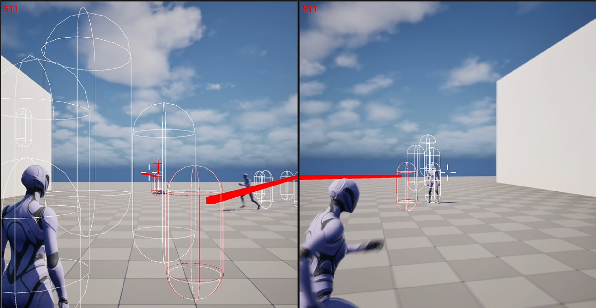

Networking Multiplayer
Lors de ce cours, j'ai exploré les concepts fondamentaux du développement de systèmes multiplayer en C++. Lors de plusieurs travaux pratiques j'ai pu mettre en pratique plusieurs de ces concepts sur Unreal Engine 5.
Thèmes abordés
Compétences et concepts clés en réseau
Voici les principaux sujets explorés durant ce cours de programmation multijoueur :
- Architectures Réseau : Modèles Serveur Dédié vs Peer-to-Peer (P2P), protocoles (TCP/UDP) et concepts de connexion de base (IP, Ports, LAN).
- Réplication et Autorité : Principe d'autorité du serveur (Server Authority), réplication de variables/acteurs, et Remote Procedure Calls (RPCs - Server, Client, Multicast).
- Gameplay Framework (Unreal) : Utilisation des classes réseaux (GameMode, GameState, PlayerState, PlayerController) et synchronisation de l'état du jeu.
- Transitions (Travelling) : Gestion des changements de cartes en multijoueur (ClientTravel, ServerTravel) avec et sans interruption (Seamless Travel).
- Compensation du Lag : Techniques pour contrer la latence (Ping, Server Reconciliation, Rewinding Time pour la validation des tirs/hits).
- Optimisation Réseau : Réduction de la bande passante (Network Profiler), gestion de la pertinence (Relevancy, Net Cull Distance), et Net Dormancy.
- Services en Ligne (Online Subsystem) : Intégration de services tiers (Steam, Epic) pour la création de sessions (Lobbies, Matchmaking) et les succès (Achievements).
Mise en pratique
Travaux Pratiques sur Unreal Engine 5
La théorie de ce cours a été mise en application à travers trois projets majeurs développés en C++ sous Unreal Engine, permettant de relever les véritables défis du développement multijoueur :
- Système de Lobby et Synchronisation : Création d'un espace d'attente permettant d'héberger ou de rejoindre une partie. Implémentation de la sélection de personnages, de la synchronisation d'un compte à rebours tolérant à la latence, et d'une transition sans coupure (Seamless Travel) vers la carte de jeu.
- Compensation de la latence (Server Rewind) : Développement d'une mécanique avancée pour valider les tirs des joueurs côté serveur. Le système "remonte le temps" pour vérifier l'exactitude d'un tir selon la perspective du client au moment de l'action, supportant un ping allant jusqu'à 500 ms.
- Intégration de l'Online Subsystem Steam : Remplacement des connexions par IP directes au profit de l'infrastructure de Steam. Mise en place du matchmaking (hébergement et recherche de sessions par filtres) et déblocage de succès (Achievements) directement liés au compte Steam.
